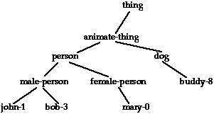
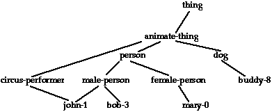

Suppose we were developing an AI program that reasoned about people. One of the first things we'd need to represent is a person, e.g.,
|
Representation |
What it says |
|---|---|
john-1: male-person name = "John Smith" age = 22 |
A male person, named "John Smith," who is 22 years old.
This piece of knowledge will be referred to internally by
the identifying label |
event-3: event actor = john-1 action = ingest object = apple-92 |
An event where John ate an apple. This will be referred
to internally by the label |
This representation was invented and used by many AI researchers, and given the generic name frame by Minsky in 1975. The frame format can be used to represent objects, events, abstract relationships, and so on.
Schank's Memory Organization Packets (MOPs) are frames primarily used to represent episodic memory, that is, memories of particular events and their generalizations.
For this course, we will use a simple implementation of MOPs and frames that is easy to understand, use, and extend.
A frame has (at least) the following parts:
john-1
male-person
name = "John Smith"
and age = 22.
The name is for internal cross-reference purposes. Each frame has
one name, and there is at most one frame for each name. Names help us
keep straight two concepts that otherwise appear identical. For
example, we might know about two 22-year-old men named John Smith,
john-1 and john-2.
The classes to which a concept belongs are sometimes called the abstractions of that concept. Conversely, the members of a class are called its specializations.
An abstraction can itself be another frame. For example,
|
Representation |
What it says |
|---|---|
male-person: person gender = male |
the concept named |
ingest-event: event action = ingest |
the class of all events involving ingesting |
The slots of a frame represent particular attributes of the concept being represented, e.g., its age, color, component parts, and so on.
A slot has two parts, a role and a filler. The role names the attribute, and the filler gives its value.
For example, in the john-1 frame, name
and age are roles, and "John Smith" and
22 are fillers.
Fillers can be the names of frames, e.g., the filler
john-1 in event-3.
Consider the following set of frames we might want to define, ignoring for the moment the slots in each one:
john-1, a male-person
male-person, a person
person, an animate-thing
animate-thing, a thing
In AI, this is called an abstraction hierarchy. Another name is conceptual taxonomy. Such hierarchies are often drawn graphically, with the most abstract items at the top and the most specific items at the bottom. For example, the chain of abstractions above might be part of a larger tree of abstractions, like this:

Everything in this tree, except john-1, is an
abstraction. john-1 is an instance (or
individual).
An instance can not have anything below it in the tree. That is,
while we might have an abstraction for "people named John," under
which john-1 and john-2 might fit, it
doesn't make sense to talk about instances of john-1.
john-1 is a unique individual. We, most of the AI
community, and probably most average human reasoners, ignore such
philosophical conundrums as "how can John, age 22, be the same
individual as John, age 10, when all the cells in his body have been
replaced in those 12 years?"
When we talk about the abstraction of some concept, we will normally mean anything that is above the concept in the abstraction hierarchy. Sometimes, we will talk about the "immediate abstractions" of a concept to refer to those concepts that are exactly one link up the hierarchy.
An important idea related to abstraction hierarchies is inheritance. A concept inherits attributes of its abstractions. If elephants are grey, and Clyde is an elephant, then Clyde is grey. If Mary is a person, people are vertebrates, and all vertebrates have bones, then Mary has bones.
There are several different ways to view inherited attributes. In some of the earliest systems, such as Fahlman's NETL, concepts inherited "virtual copies" of the slots on their abstractions. Furthermore, the inherited slot was treated as a default, which could be overridden. Thus, we might have
|
Representation |
What it says |
|---|---|
elephant: animal color = grey |
elephants are normally grey... |
clyde-1: elephant color = white |
...but Clyde is a white elephant |
This interpretation of inherited attributes has problems, however. The first problem is that if fillers can be overridden, then any concept can be put under any other concept. For example, you could say that a clock is an elephant with all the attributes of elephant overridden appropriately. The second problem arises when you have multiple inheritance.
Multiple inheritance occurs when a concept has more than one one immediate abstraction. For example, John might be both a person and a circus performer, where the class of circus performers includes people, elephants, trained fleas, lions, tigers, bears, and several other subclasses of animate things. Graphically, the abstraction hierarchy looks something like this:

The concept john-1 inherits from both
person and circus-performer. Thus, we might
conclude that john-1 has bones and wears colorful
costumes.
But what if the abstractions have conflicting default attributes? The classic conundrum in this area of AI is the Nixon paradox. Nixon was a Republican and a Quaker. Assume that by default Republicans believe in war and Quakers don't. Then what does Nixon believe?
An alternative interpretation of inherited attributes is that they are constraints. That is, if an abstraction says that elephants are grey, then any instance of an elephant be some shade of grey color.
Constraints can be refined by specializations of an abstraction, but they can't be overridden. Thus, if some elephants are white, we can't say elephants are grey. We might say instead that elephants as a group have some color, then create two subclasses of elephants, white ones and grey ones.
This approach resolves the examples above by not allowing them to be represented in the first place. You can't put the clock class under the elephant class, because the attributes of clocks don't satisfy the constraints of elephants. If Nixon believes in war, then either he is not a Quaker or Quakers don't have that constraint.
An abstraction such as Republican Quakers can be formed, but it will have no members, because nothing can satisfy all the inherited constraints.
The "inheritance of defaults" approach captures an important part of human reasoning. If we hear that Mary went to Europe, we assume, by default, that she flew, because trips to Europe are usually by plane. The "scruffies" of AI, who are concerned with making systems work, take the "defaults" approach. They accept the fact that their systems could make clocks a kind of elephant, but believe that reasonable learning algorithms won't do this.
The "inheritance of constraints" approach is appealing to the "neats" of AI, because it avoids paradoxes and lends itself to logical formulation. The hard, i.e., intractable, problem turns out to be determining when one constraint could legally specialize another. This is logically equivalent to theorem proving.
The obvious generalization algorithms, including those used in some classic MOP-based programs, e.g., CYRUS, build constraint-oriented hierarchies. This is because new abstractions are formed by taking features common to some set of instances.
Comments?  Send mail to Chris
Riesbeck.
Send mail to Chris
Riesbeck.